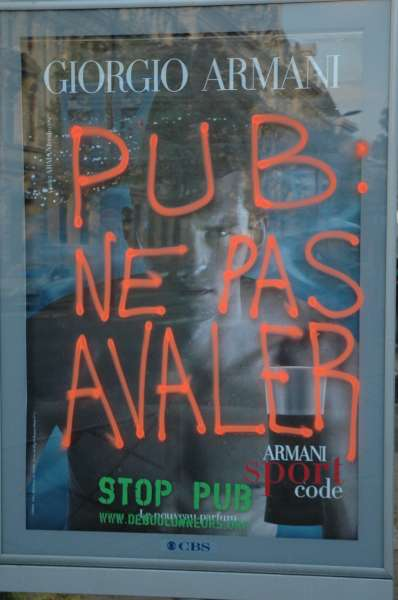
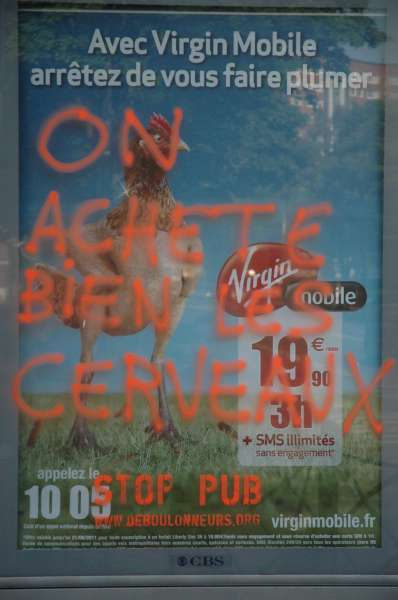
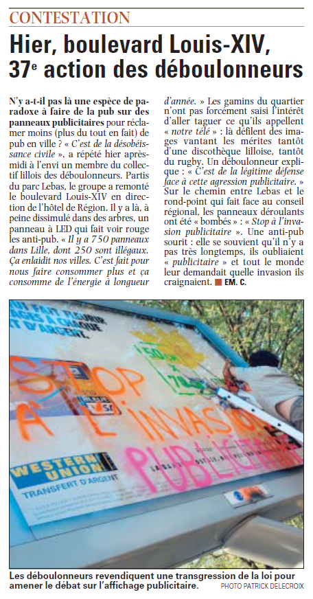

| |
Site dédié à la publication d'informations communiquées par le Collectif des déboulonneurs. En aucun cas ce site n'appelle à des actions illégales. | |
 |
||
|
Accueil du site > Lille > Action du Collectif des Déboulonneurs de Lille – 23 Avril 2011
Résumé de l’action :Date : 23 avril 2011 Heures approximatives de l’action elle-même : 18 à 19 heures Lieu de l’action : Boulevard Louis XIV, Boulevard Hoover Nombre de panneaux touchés : 9 (6 sucettes, 2 grands panneaux 4x3, 1 panneau à LED) Propriétaire des panneaux touchés : CBS, Oxialive Nombre d’activistes : une dizaine Nombre approximatif de sympathisants : une dizaine Nombre approximatif de passants-spectateurs : quelques piétons bienveillants et un groupe d’enfants réfractaire, nombreux automobilistes Nombre approximatif de journalistes présents : 3 (2 de La Voix du Nord, 1 de Nord Eclair) Nombre approximatif de policiers : des policiers ont été vus à proximité immédiate de notre groupe Attitude de la police : aucune intervention de leur part Retombées média :

Compte-rendu plus détaillé :Le Collectif des Déboulonneurs de Lille est à nouveau entré en désobéissance civile ce samedi 23 avril 2011, à 18h, à Lille, boulevard Louis XIV. Le cortège des activistes est parti du parc Jean-Baptiste Lebas, Sébastien annonçant au micro aux personnes situées dans le parc les raisons de notre action. Toujours de manière non-violente, assumée, symbolique et en public, sept barbouilleur-ses se sont donc attaqués à une dizaine de panneaux de 2m² (dits « sucettes ») et de 12m² pour dénoncer l’omniprésence de la publicité dans l’espace public et les dangers environnementaux, sanitaires et sociaux qu’elle représente. Nous nous sommes déplacés à l’entrée du Boulevard Papin où des policiers, trop occupés à verbaliser un automobiliste, ne sont pas intervenus à propos de notre action. Une première « sucette » de 2m² a été barbouillée par Marion avec la mention « STOP PUB ». Et comme sur chaque panneau, grâce au pochoir, y fut apposé le nom du site de soutien. Nous avons été rejoints par une jeune joueuse de clairon qui s’est servie de son instrument pour nous accompagner. A l’entrée du boulevard Louis XIV deux « sucettes » de 2m² situées de chaque côté du boulevard ont été barbouillées. La première a été l’objet d’un détournement de publicité, la mention « Lille, ville dynamique et rayonnante » ayant été complétée à la bombe par « ...DE PUB, 750 PANNEAUX A LILLE ! » et, au dos, « PUB = NE PAS AVALER ». Idem pour la deuxième avec, au recto « C’est la fête » complétée de « ...DE LA PUB » et au verso, « MOINS DE PUB, PLUS DE POESIE ». En continuant sur le même trottoir, à l’intersection avec la rue du Professeur Calmette, nous attendait une « sucette » de 2m² dont la publicité a été détournée avec « C’est la fête » « DE LA PUBLICITE » sur une face et « ON ACHETE BIEN LES CERVEAUX » sur l’autre. Ce fut l’occasion de chanter ensemble la « Petite histoire de la publicité », un air détourné lui aussi de sa composition première. Un peu plus loin, à l’intersection avec le boulevard du Maréchal Vaillant, ont barbouillé un grand panneau déroulant de 4x3m en inscrivant « STOP A L’INVASION PUBLICITAIRE ». A l’intersection avec le boulevard du Président Hoover deux autres panneaux nous attendaient : un panneau à L.E.D. barbouillé avec la mention « PUBLICITE = DANGER ! » et un panneau déroulant de 4x3m barbouillé avec la mention « QUI PAYE LA PUB ? (NOUS !) ». En retournant sur nos pas, à l’intersection avec le boulevard du Maréchal Vaillant, un panneau déroulant de 2m² fut barbouillé avec la mention « HALTE A LA PUB ! ». Enfin, une vingtaine de mètres plus loin, nous avons clôt la déambulation en barbouillant une « sucette » de 2m² avec la mention « MANGE TA PUB ! » Dans les quartiers défavorisés (tels que celui qui borde le boulevard Hoover), les plus jeunes ne comprennent pas que nous nous en prenions aux panneaux publicitaires à L.E.D., qui « coûtent cher » et qui leur permettent de « regarder la télé ». Pour eux, ces panneaux créent un peu d’animation dans les quartiers où celle-ci manque ! Le Collectif entend donc par son action créer un débat public, notamment sur la notion de liberté de non-réception, avec pour objectif la réduction partout en France (villes et campagnes) du format de l’affichage publicitaire à un maximum de 50x70cm (taille de l’affichage associatif et politique). La police, elle, a par contre brillé par son absence d’intervention, malgré des passages répétés. 
Réponse du collectif à l’article de La Voix du NordSuite à l’article de La Voix du Nord, le Collectif des Déboulonneurs de Lille conteste en particulier le passage ci-dessous : "N’y a-t-il pas là une espèce de paradoxe à faire de la pub sur des panneaux publicitaires ... pour réclamer moins (plus du tout en fait) de pub en ville ?" D’une part, nous réclamons la réduction du format de l’affichage publicitaire à un maximum de 50x70cm, et non sa suppression. (sauf quand la publicité enfreint l’article 4 du décret 92-280 du 27 mars 1992, sur les principes généraux applicables en matière de publicité, et pris en application des articles 27 et 33 de la loi n° 86-1067 du 30 septembre 1986 : "La publicité doit être exempte […] de toute incitation à des comportements préjudiciables à la santé, à la sécurité des personnes et des biens ou à la protection de l’environnement.", ce qui est souvent le cas.) D’autre part, voici la définition de la "publicité" selon le Petit Larousse : "Activité ayant pour objet de faire connaître une marque, d’inciter le public à acheter un produit, à utiliser un service, etc ; Ensemble des moyens et des techniques employés à cet effet ; Annonce, encart, film, etc, conçus pour faire connaître et vanter un produit, un service" Le Collectif des Déboulonneurs de Lille lutte précisément contre les dangers environnementaux, sanitaires et sociaux de la publicité, avec pour vocation d’ouvrir le débat sur la place de la publicité dans l’espace public. Assurément, il ne propose ni produit, ni service. Nous n’avons rien à vendre, ni à gagner, sinon la défense du bien public. Contrairement aux publicitaires. 
|
|
Site utilisant SPIP - Hébergement Ouvaton
|